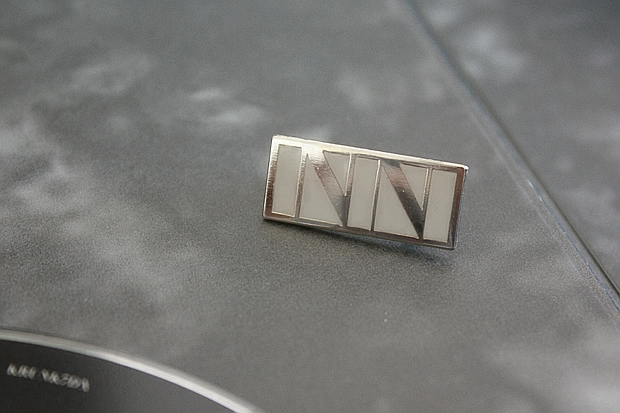
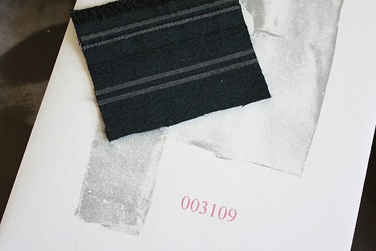

去年11月在网上预定的Sigur Rós《inni》的特别版，是我们第一次在国外订唱片，然而第一次就中招了。去年11月在网上就已经看到有网友拿到了唱片，而我们的迟迟没来。等了一个多月后，我们开始尝试写信跟那边联系，结果人老外说已经给我们发货了，但是他们用的英国邮政，没有发货单号，没法查询。又等了一段时间，我们预感唱片应该不会来了，估计是寄丢了，不是丢在路上，就是丢在海关里。
但这第一次的国外订购经历，花费了我们几百大元，我们不甘心这样不了了之。于是我们开始简单的维权，因为老外无法提供发货单号等资料，我们认为是他们的做事失误，应该由他们负责。回信中，我们强调了一下自己多么苦逼，作为sigur ros如此大牌的乐队，应该关照一下我们这些弱小粉丝，重新给我们发一次货。结果还可以，老外还是讲道理的，答应给我们重新发一次货。于是我们又等了一段日子。
一下三个月过去，已到了春节后，唱片还是没有踪影。我们再次追问了一下老外，那边回复说已经发货了，但又是用的英国邮政，再次无法提供快递单号。我们愤怒的批评了一下，并装模作样地爬到脸书等地方跟贴抗议。终于，老外再次答应给我们重发，这次终于用了EMS。于是，昨天，我们终于等来了这张唱片，历时4个多月。精美的盒子里包含：两张CD、两张DVD、一张蓝光盘、一张印花黑胶（但我们没有唱机）、四张大幅名信片、一张感光纸（不知道怎么用）、一个inni徽章、最后是一个小信封，编号3109,里面装了据说是从他们巡演衣服上剪下来的衣服碎片，摸了一下，感觉质地非常不错。 至此，这件颇为周转的事尘埃落定。对此，我们感到老外还是蛮讲诚信，对他们表示衷心感谢。想到他们不懂中文，这里除了敲下 Thank You ！两词之外，我们特地上谷歌翻译查了一下冰岛语： Þakka þér Sigur Rós !


